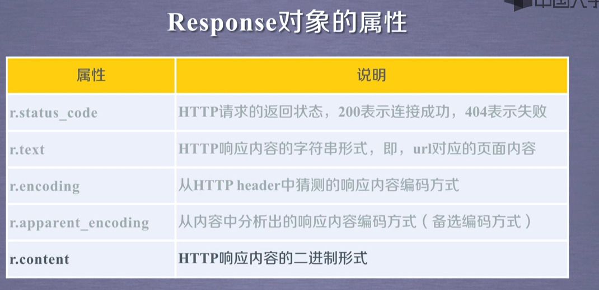

Requests
the website is the API... Requests的get()方法1 | 最简单的获得网页的方法 |
requests.get(url,params=None,*kwargs)
url:拟获取页面的url链接
params代表url中的额外参数，字典或字节流格式，可选
*kwargs:12个控制访问的参数
requests最重要的两个对象是request和response
response的使用:

robots.txt
Re
python的爬虫使用的是requests模块 使用import可以引入模块，根JAVA的导入包有异曲同工之妙然后使用url=’’
再使用r=requests.get(url,header=header)
这个后面的header是伪装浏览器用
再使用print r.text打印文本
下面是两道CTF的python爬虫类题目，在这里做一下实践一下
1.速度要快
进入页面后，发现有个提示我觉得你要快点。ctrl+u查看源代码提示:
1 | </br>我感觉你得快点!!!<!-- OK ,now you have to post the margin what you find --> |
也就是说我们必须很快的post一个margin给服务器才能拿到flag.我们看一下网站的http头。
发现有个可以的flag头部:
1 | flag: 6LeR55qE6L+Y5LiN6ZSZ77yM57uZ5L2gZmxhZ+WQpzogT1RRNU56TTE= |
这种写法感觉是base64加密，我们放入base64解密中发现可以解密两次，分别是:
1 | è·çè¿ä¸éï¼ç»ä½ flagå§: OTQ5NzM1= |
再解密就都是乱码了，因而极有可能就是提交这个949735=这个值。但我们刷新页面后就会更换值，并且页面提示了要GKD!!!
因而我们的python就闪亮登场了！！。
以下为我写的小脚本(跟着网上大佬一行一行写哈哈)
1 | import requests |
这样就可以拿下key了
2.秋名山老司机
这道题。。说实话我怀疑是炸了，网上都说刷新后会有提示post提交value的值为答案就可以了。但是我刷新了没有效果，算了这道题就当练习python。最后也跑不出flag.不知道是不是flag被删了。
以下为python脚本:
1 | import requests |